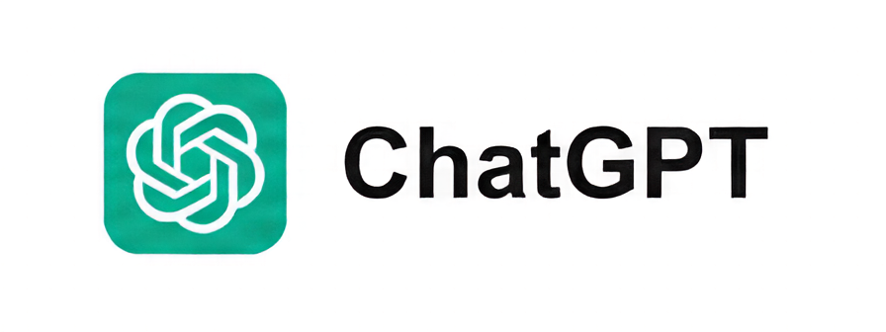
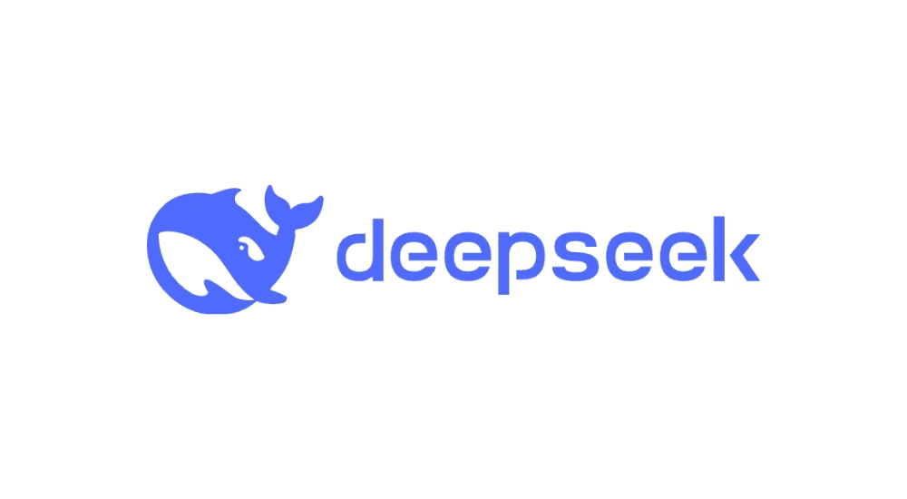

Новичкам и дизайнерам
Тем, кто хочет перестать бояться кода, научиться быстро набрасывать рабочие прототипы своих идей и использовать ИИ как личного ментора, который объясняет каждую строчку без душной теории.
AI
Научитесь выстраивать архитектуру проектов изначально под нейросети, интегрировать любые API по документации и выводить готовые продукты на продакшн без хаоса в кодовой базе, галлюцинаций моделей и слепой веры в случайные промты.
Выбирай свой левел:
Тем, кто хочет перестать бояться кода, научиться быстро набрасывать рабочие прототипы своих идей и использовать ИИ как личного ментора, который объясняет каждую строчку без душной теории.
Фронтендерам и бэкендерам, которые устали писать однотипный бойлерплейт вручную. Научим выжимать максимум из контекста моделей, правильно разбивать проект на модули и кодить в 10 раз быстрее через режим Auto.
Для тех, кто пилит свои продукты в соло. Как собрать готовый к продакшну MVP, прикрутить API, настроить стили и выкатить проект на хостинг за одни выходные, пока конкуренты пишут ТЗ.
На самом деле это нужно всем, в 2026 году — это не опция, это необходимость. Вайб-кодинг — это не просто техника, это философия того, как разработчики работают сейчас и будут работать дальше.
Anthropic
Самая мощная модель для сложных задач. Отлично понимает контекст, пишет чистый код и объясняет решения. Подробнее в официальной документации.
Когда юзать: Сложные баги, проектирование архитектуры, code review

OpenAI
Универсальная модель для повседневных задач. Быстрая, надёжная и хорошо знает популярные фреймворки. Изучи API-документацию для интеграции.
Когда юзать: Типовые фичи, быстрые фиксы, обучение

DeepSeek AI
Экономичная китайская модель с акцентом на код. Хорошо справляется с алгоритмами и математикой. Больше деталей в репозитории GitHub.
Когда юзать: Простые задачи, скрипты, алгоритмы, эксперименты
Как готовить кодовую базу, чтобы нейросеть не сошла с ума.
Нейросети моментально тупеют, когда проект разрастается и превращается в «спагетти-код». Чтобы ваш ИИ-помощник оставался гением, нужно строить проект по правилам атомарной модульности и строгой типизации. Чем прозрачнее структура для человека, тем меньше шансов на галлюцинации у модели.
Разбивайте код на мелкие, независимые файлы. Если ваш файл превышает 300 строк — ИИ начинает терять нить повествования. Скармливайте модели только те модули, которые нужны для конкретной задачи. Используйте принцип Single Responsibility: один файл — одна функция.
Пишите JSDoc или комментарии не только для людей, но и для ИИ. Описывайте входные данные, интерфейсы и ожидаемое поведение функций прямо в коде. Это создает жесткие «рельсы», по которым модель будет генерировать логику без отклонений от курса.
Не забивайте память модели мусором. Перед тем как просить ИИ написать новую фичу, убедитесь, что в контексте нет устаревших функций, нерелевантных логов или огромных массивов данных. Держите ИИ в курсе только актуальной архитектуры.
Использование TypeScript или четких схем данных — это лучший способ «объяснить» ИИ, как работают ваши объекты. Типы служат живой документацией, которая ограничивает фантазию нейросети и заставляет её следовать правилам вашей системы.
Облачные подписки и сторонние сервера — далеко не единственный путь для современного разработчика. Время, когда для работы с мощными моделями требовался постоянный доступ в сеть и ежемесячная оплата зарубежных сервисов, постепенно уходит в прошлое. Сегодня развернуть полноценного ИИ-помощника можно прямо на своем рабочем ноутбуке.
Главное преимущество локального подхода — это абсолютная приватность ваших данных. Ни один символ вашего коммерческого кода или приватной базы данных не покинет пределы жесткого диска. Это полностью снимает ограничения безопасности, которые часто накладывают крупные компании на использование публичных ИИ-сервисов вроде ChatGPT или Claude.
Для реализации этой схемы используется инструмент Ollama — легковесный и невероятно эффективный софт, позволяющий запускать тяжелые LLM-модели буквально одной командой в терминале. Вы получаете полную независимость от лимитов, очередей на серверах и проблем с оплатой подписок.
Выбирай свой левел:
Тем, кто хочет перестать бояться кода, научиться быстро набрасывать рабочие прототипы своих идей и использовать ИИ как личного ментора, который объясняет каждую строчку без душной теории.
Фронтендерам и бэкендерам, которые устали писать однотипный бойлерплейт вручную. Научим выжимать максимум из контекста моделей, правильно разбивать проект на модули и кодить в 10 раз быстрее через режим Auto.
Для тех, кто пилит свои продукты в соло. Как собрать готовый к продакшну MVP, прикрутить API, настроить стили и выкатить проект на хостинг за одни выходные, пока конкуренты пишут ТЗ.
На самом деле это нужно всем, в 2026 году — это не опция, это необходимость. Вайб-кодинг — это не просто техника, это философия того, как разработчики работают сейчас и будут работать дальше.